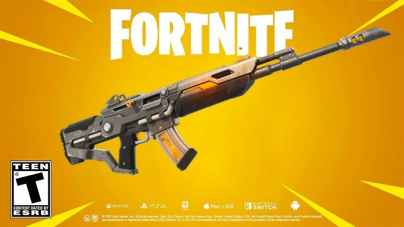
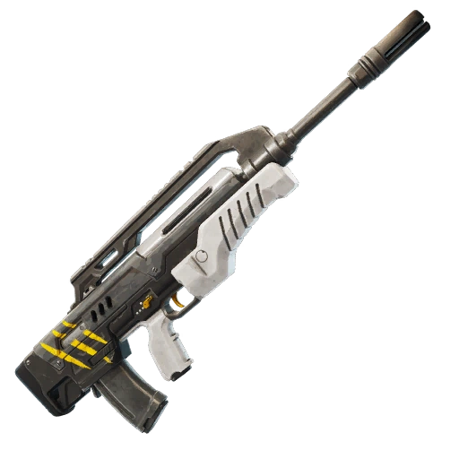

The Loot Pool
The loot pool of Chapter 7 Season 3 is very diverse and adds many changes to the META of the game in both public and competitive matches. In this webpage I will break down the loot pool into different sections: weapons, heals, movement, and miscellaneous items. Within each of these sections I will grade each item from A+ to F and will explain why it received its grade and how it specifically impacts the season. At the end I will provide a paragraph explaining my preferred loadout and why I believe it provides me a competitive advantage.
Weapons
Assault Rifles
Chaos Exploder Rifle A-

The chaos exploder rifle is one of the two new AR's and on the opening day of the season it was extremely strong which prompted 2 emergency nerfs to keep the weapon in check and increased its recoil. This weapon has a fast fire rate of 3.4 with 30 damage per bullet and a mag size of 25. (It is important to note that all weapon stats will be based off the rare base stats). Though the main draw of the weapon is that each bullet explodes in small AoE (Area of Effect). This explosion deals 6 damage to enemies allowing players to miss their shot and still deal damage. With the nerfs it has helped balance this weapon out a ton while still leaving it in a very good state. Even with the nerfs it still has fairly little recoil and is amazing at pushing enemies out from cover because of its AoE damage. I believe this is the best AR in the game and I will give it an A- rating only because the recoil nerf keeps a lot of players from being able to hit consistent shots and I believe there are better weapons currently available.
Surgical Burst Rifle B

The surgical burst rifle is second new AR this season and its main draw is its quick burst shots of damage quickly allowing you to open fights with a massive damage lead. It has a fire rate of 5.79 and 25 damage per shot and a 30-round mag while also being accurate. These are solid stats and if you hit all your shots in a single burst, you can do upwards of a hundred damage. The only problem though with this weapon is that if you do miss a burst or only land a couple bullets you will do very little damage and can lead to you easily losing a fight you should have won. This is a B grade weapon this season although it has its moments of glory the chaos exploder rifle is a much better option if you choose to carry an AR.